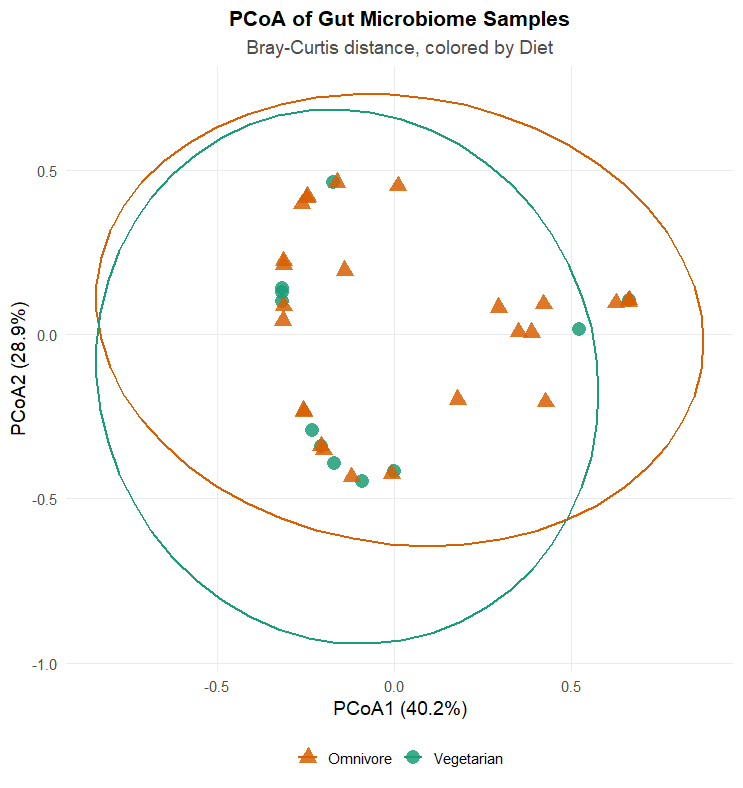
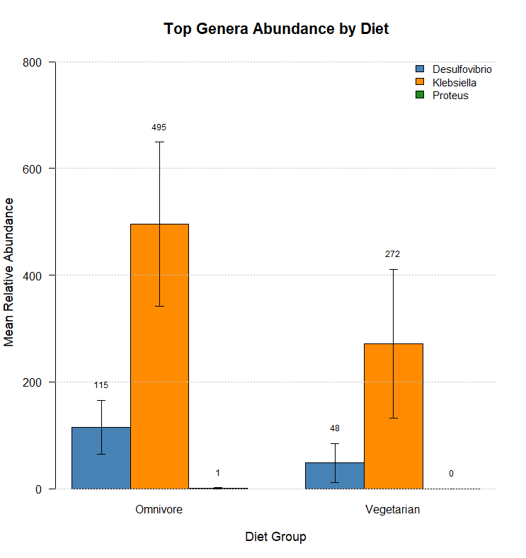
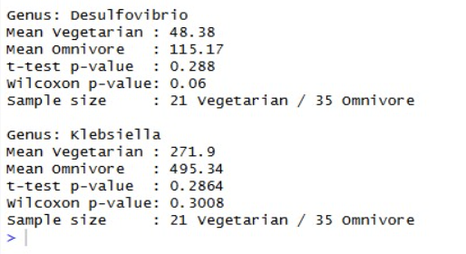
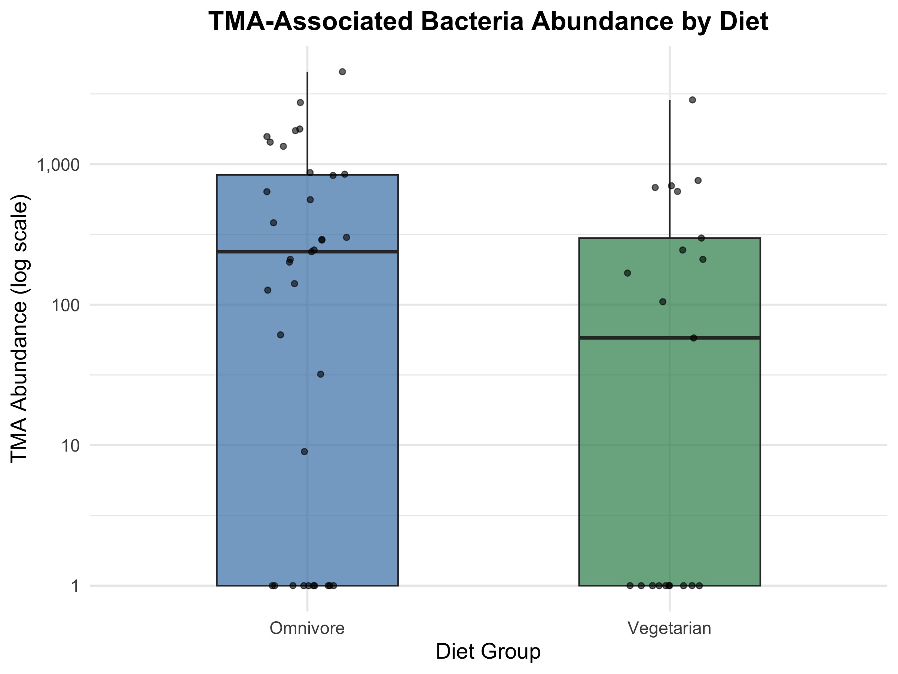
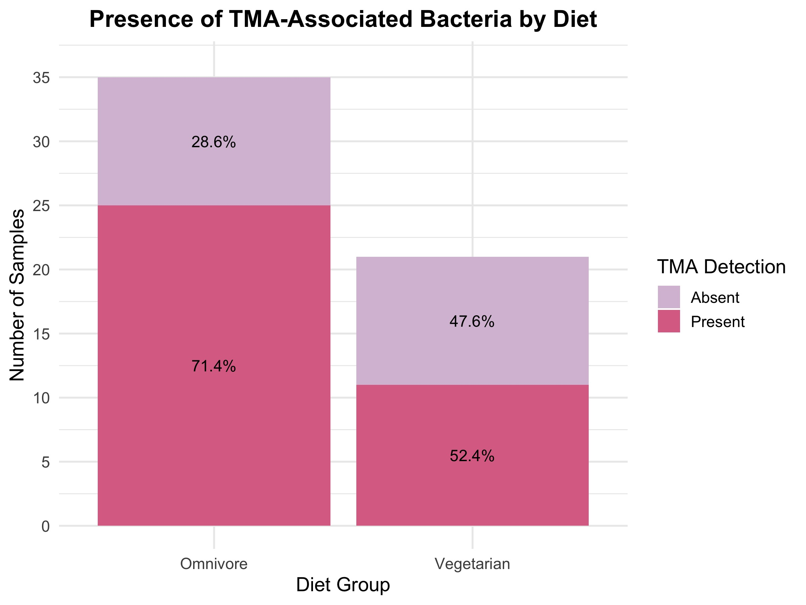

Research
Abstract
The human gut microbiome plays an essential role in human health, with its composition and function shaped by diet. This study examines the differences between omnivores and vegetarians in their gut microbial communities, focusing on a bacteria involved in trimethylamine (TMA) production, which is linked to an increased risk of cardiovascular disease. To investigate this risk, 16s rRNA sequencing data were analyzed that contained 57 healthy participants (23 vegetarian and 34 omnivores). By doing so, different factors such as community structure, microbial diversity, and functional potential were assessed between both dietary groups. The sequences were converted into amplicon sequence variant (ASV) tables and combined with the sample metadata. During the preprocessing stage, the low-abundance samples with zero-counts were removed, and the count data was converted into relative abundances. Alpha diversity was assessed using Shannon index in R studio, and differences between the two groups were evaluated through a Wilcoxon rank-sum test. Beta diversity was also evaluated using Bray-Curtis dissimilarity and illustrated through Principal Coordinates Analysis (PCoA). The analysis also included the relative abundance and evaluation of the taxonomic composition of TMA-producing bacterial genera. Additionally, a stacked bar plot of microbial composition, boxplot of TMA-associated abundance, and a presence-absence bar chart was applied to better examine the differences. Results indicated that through the Shannon diversity, omnivores have a slightly higher median than vegetarians, but the difference is not statistically significant, with substantial overlap between groups. The PCoA analysis illustrated a partial separation, indicating no distinct difference in microbial composition. The bar plot, boxplot, and bar chart also indicated a lack of significant variation in the relative abundance of TMA-producing bacteria. Overall, these results indicate that although diet may not have a strong influence on alpha diversity, it still could possibly influence microbial composition and the presence of important functional taxa. Omnivores exhibited higher levels of TMA-related bacteria, which may have potential links to cardiovascular disease risk. Additional statistical evaluation and larger datasets are needed to support these findings to better understand and interpret the biological significance.
Introduction
The human gut microbiome contains many different microorganisms, each playing an important part in maintaining health. These microorganisms are vital to a wide range of biological functions including metabolism, immune system regulation, nutrient digestion, and protection against pathogenic organisms (Turnbaugh et al., 2007; Human Microbiome Project Consortium, 2012). They also play a part in the breakdown of dietary substances that the body is unable to do on its own. This allows for the production of metabolites that can either benefit or harm the host. When the overall balance between different microbial communities is disrupted, this dysbiosis can cause a variety of metabolic health disorders such as diabetes, obesity, and cardiovascular disease (Clemente et al., 2012; Lynch and Pedersen, 2016). Research into gut dysbiosis has continued in efforts to understand the different factors that affect the microbiome.
Diet has been shown to be one of the most important factors shaping the gut microbiome since it can be easily modifiable. The overall gut microbial composition and its functions can be affected by dietary habits, regardless of short-term or long- term changes (David et al., 2014; Sonnenburg and Bäckhed, 2016). Omnivore diets typically encourage microbial taxa that are linked to fat metabolism as well as protein. In comparison, however, vegetarian diets seem to be linked in support of bacteria that are fiber-degrading in addition to positive metabolites. (De Filippo et al., 2010; Wu et al., 2011). These variations not only play a role in the microbial diversity, but also its functional capacity and the production of metabolites that influence human health.
One such metabolite is trimethylamine-N-oxide (TMAO). High levels of TMAO are known to be associated with increased risk of cardiovascular disease and other similar diseases (Tang et al., 2013). Elevated TMAO has been found to promote cholesterol deposits in the arteries and increase foam cell formation of macrophages, leading to atherosclerosis. It also plays a role in blocking pathways that prevent plaque buildup, exacerbating the issue.
TMAO is formed when carnitine, choline, and phosphatidylcholine compounds, typically found in animal-based products, are metabolized in the body (Wang et al., 2011). Research has shown that the role of gut microbiota in the formation of TMAO is obligatory. Omnivore diets, especially those rich in red meat and animal-based products have higher levels of L-carnitine and choline which are efficiently converted into TMA in the gut. In contrast, vegetarian and vegan diets contain lower levels of L-carnitine and choline and therefore lower TMA formation. Once TMA is produced, it reaches the liver through the bloodstream where it is oxidized into TMAO. These dietary compound differences play a significant role in metabolic health and disease and highlight the importance of gut microbiome composition in predicting CVD risk (Koeth et al., 2013).
Previous research has demonstrated that several bacterial genes such as Desulfovibrio, Proteus, and Klebsiella play a part in TMA production (Zhu et al., 2016). More specifically, the cutC/cutD gene cluster was found primarily in Proteobacteria and Firmicutes (mainly Clostridia), and is involved in the conversion of choline to TMA. The cntA/cntB gene cluster, however, was most commonly found in Escherichia, Acinetobacter, and Klebsiella microbial groups and is involved in conversion of carnitine into TMA (Rath et al., 2017) . These findings indicate that these genes are present in a phylogenetically diverse set of bacteria that all contribute to metabolizing TMA precursors into TMA. Each type of diet results in varying levels and activity of these bacteria, further suggesting that dietary differences can shape and influence different microbial compositions connected to TMA metabolism. Studying the abundance of these bacteria in varying diet groups can provide insight into disease risk and potential therapeutic and dietary interventions.
16S rRNA gene sequencing is a commonly used method to study these conserved microbial communities (Caporaso et al., 2011). Through this technique, scientists can not only identify the bacterial taxa that exist, but also estimate the relative abundance of the taxa within a sample. This data is then taken and converted into amplicon sequence variants (ASVs), which allows for much more detailed depictions in comparison to operational taxonomic units (OTUs) (Callahan et al., 2016). This is because ASVs are generated through denoising approaches such as DADA2 in order to correct sequencing errors and distinguish between biologically meaningful data and sequencing noise. This improves downstream functional inference and accuracy of microbial profiling (Narayan et al., 2020) .
Alongside being able to identify particular microbial taxa, there are a variety of tools that are utilized in order to measure diversity in addition to assessing the variation between microbial communities. One such bioinformatics tool is Alpha diversity metrics, such as the Shannon index, used to study the distribution and richness of species within a sample. Beta diversity metrics, such as Bray-Curtis dissimilarity, is utilized to assess the differences that exist between microbial communities and is typically visualized through a PCoA (Lozupone and Knight, 2005). Together, these methods allow for a complete view of microbial variation both individually and at the group level. These analytical approaches allow researchers to compare microbial communities between healthy and disease states to identify associations between gut microbiota and metabolic disease.
The link between the human gut microbiome and metabolic disease has been widely studied and established in previous research. Studies in both humans and animal models have shown that microbial differences exist in healthy versus metabolic disease states. Elevated TMAO levels have shown increased inflammation and plaque buildup, acting as a reliable indicator of cardiovascular disease and events. Researchers have begun to explore various therapeutic options, including dietary changes, addition of probiotics, and fecal microbiota transplantation to mitigate these health risks.
However, several gaps still remain in this field of research. Firstly, there is limited human-based microbiome research. Human microbiomes are highly variable which can affect previously generalized findings. Recent research suggests that TMAO production varies significantly between individuals, and that dietary classification alone may not fully predict TMAO-producing ability, highlighting the importance of considering inter-individual variation in gut microbial functional capacity (Wu W et al., 2019; Talmor-Barkan & Kornowski, 2017). In addition, microbiome differences have been observed in healthy and diseased states and are highly individualized, suggesting that dietary patterns may not fully explain the observed cartoon between individuals (Johnson et al., 2019). There is limited understanding of which specific bacterial taxa are involved in disease mechanisms. Furthermore, the extent to which long-term dietary patterns influence the abundance of these functionally relevant microbes remains unclear (Talmor-Barkan & Kornowski, 2017).
This research project aims to address these gaps by examining whether vegetarian and omnivore diets in healthy patients differ in gut microbiota composition and in the relative abundance of bacterial taxa associated with TMA production. By linking dietary patterns to microbial composition and TMA production, this study seeks to provide a more detailed understanding of how diet both directly and indirectly influences cardiovascular disease risk in healthy adult populations.
It was hypothesized that individuals consuming an omnivore diet would have a higher relative abundance of gut microbial taxa associated with microbial TMA production and distinct differences in overall microbial composition compared to vegetarians.
Methods
This research project used a secondary dataset originally generated by Wu W et al. (2018) who studied trimethylamine-N-oxide (TMAO) production and gut microbiome composition in 57 healthy adult volunteers of whom 23 were vegetarians/vegans, and 34 were omnivores. Diets were self-reported with vegetarians/vegans classified as individuals who hadn’t eaten any meat or seafood for a minimum of 2 years and omnivores as those who consume both plant and animal products. The inclusion criteria for participants was to be 20 years or older in age, no exposure to antibiotics, probiotics, or carnitine supplements in the past month, and no history of recent gastrointestinal disease or chronic disease. Participants were asked to collect stool samples which were stored in the lab at -80°C until they were analyzed using the Mobio PowerFecal DNA Isolation Kit. The 16S rRNA gene V3-V4 region was amplified using Illumina MiSeq sequencing methods to obtain paired-end sequencing reads. Additional methodology can be found in the original publication (Wu W et al., 2018).
In the present study, 16S rRNA gene raw sequencing reads were downloaded from the Sequence Read Archive (SRA) at NCBI under BioProject accession number SRP148840. Each of the 57 files contained multiple segments of a code/identifier as the header, followed by a 300-301 bp long DNA sequence. The HPRC remote console at Virginia Commonwealth University was used to download all 57 files in FASTQ format using SRR IDs. Bioinformatics analysis was performed in R using the DADA2 package. The methods workflow is depicted in Figure 1.
Sequencing reads were first filtered and trimmed to remove low-quality bases and reads. Reads that exceeded the expected error threshold were excluded from further analysis. Identical sequencing reads were collapsed into unique sequences through dereplication. Error modeling was performed to learn sequencing error rates and amplicon sequence variants (ASV) were inferred through the DADA2 pipeline. An ASV table was generated, grouping identical sequence segments under a header of the same sequence segment and providing a total count. Chimeric sequences were removed and a taxonomical assignment was performed for each ASV using the SILVA database. Results were filtered to a predefined list of known TMA-producing bacteria genera in the gut. Data was normalized to show relative abundance within each of the 57 participant’s samples. The bioinformatics workflow was adapted from the DADA2 pipeline tutorial (Callahan et al.). Data tables generated to show ASVs, their mapped taxa, and dietary information linking both were used to generate figures for analysis and test results for statistical significance.
Results
A number of figures and tables were produced from the aforementioned data tables, including a PCoA plot of gut microbiome samples, an Adonis Test of the PCoA plot, a bar plot of the top genera abundance by diet, a Wilcoxon test of the bar plot, an alpha diversity plot of the diet with a Shannon index, a Wilcoxon test of the alpha diversity plot, a box plot of TMA-associated bacteria abundance by diet, and a bar chart of presence of TMA-associated bacteria by diet. All figures were produced in R.
The PCoA plot (Fig. 2.) addresses whether or not the overall gut microbiome composition differs between omnivore and vegetarian diets. It is also intended to determine if diet is a major driver of variation in the gut microbiome, and determines the level of microbial variation in all samples. This plot utilizes the Bray-Curtis distance, due to an abnormal distribution of data, to differentiate between omnivore and vegetarian samples based on relative abundance, and their pattern variation. The x-axis of 40.2% and y-axis of 28.9% represent the variation between all samples. The figure showcases ellipses, determining similarities between the two diet groups due to elliptical overlap, and differences due to the lack of complete alignment between both ellipses. Furthermore, the plot supports our research question that diets differ based on gut microbiota.

An Adonis Test was conducted, showcasing an f-value representing the differences between two diet groups in relation to the variation within each diet group. Additionally, a p-value was determined to address the statistical significance between diet groups based on the microbiome composition of omnivores and vegetarians. In addition to, determining if the f-value is significant enough to incorporate in our statistical analysis. The Adonis Test resulted in a p-value of 0.95 displaying a value much larger than the 0.05 threshold, determining that the f-value of 56.12 and PCoA plot would display no statistical significance.
The Stacked Bar Plot (Fig 3.) displays the mean relative abundance of the top three genera, Desulfovibrio, Klebsiella, Proteus, and their estimated differences between both diet groups. As well as error bars representing the standard error of the mean relative abundance for each genera.


A Wilcoxon test produced p-values of 0.288 and 0.2864 for Desulfovibrio and Klebsiella, respectively. Neither of these values were statistically significant, as both p-values were much larger than a 0.05 threshold. Proteus was disregarded in the statistical analysis for this plot as its levels were negligible, due to its average mean relative abundance ranging from 0-1. Wilcoxon was preferred over a typical t-test to account for the abnormal distribution of our data.
The Alpha Diversity Plot (Fig. 4.), generated with a Shannon Index, intends to assess whether diet has an effect on microbiome diversity, and uses the aforementioned index to measure within the sample diversity. The median of the omnivore diet is much higher than the vegetarian, with high variation in outlier number and location. Both diets possess a number of samples at 0.


A Wilcoxon rank-sum test provided a value of 0.1556, indicating that diet does not significantly affect overall microbial diversity.
The boxplot (Fig. 5.) intends to compare the relative abundance of TMA-associated bacteria by diet. The median of the omnivore diet is larger than the vegetarian diet, but the general spread of either diet appears similar with clustering around the median, and a number of samples at 0. It showcases high variability and overlapping distribution. However, a Wilcoxon test provides a value of 0.1318, indicating a lack of statistical significance.

Finally, the bar chart (Fig. 6.) displays the absence vs. presence of TMA-associated bacteria by diet. It compares each diet’s proportions, which show mixed absence and presence. The associated bacteria is not consistent. A Chi-squared test with Yates’ continuity correction provided a p-value of 0.2493, which was not statistically significant.

Discussion
Several limitations may have influenced the results of our analysis. No statistically significant difference in microbial diversity, community composition, or TMA-producing bacteria was observed. Because results were non-significant, they did not provide sufficient evidence of a strong effect. However, this does not indicate the absence of a biological relationship. High variability was present between samples, and due to the diverse nature of human gut microbiomes typically, we may observe stronger correlations within a larger population.
Previous literature such as Koeth et al. 2013 and Wu et al. 2011 have showcased that omnivore diets are associated with increased production of TMAO, as well as enrichment of TMA-producing bacteria. While our study noted a similar pattern of higher median abundance in omnivores, our results were not statistically significant. We postulate that this discrepancy may be the result of our sample size, and/or differences in study design. This trend is biologically plausible, as omnivorous diets contain higher levels of carnitine and choline, which serve as substrates for TMA production by gut microbiota. These compounds are then metabolized into TMA and converted into TMAO in the liver, linking microbial composition to cardiovascular disease risk pathways.
A power analysis was conducted to gauge the viability of statistical success in a larger sample size. The test we chose for this power analysis was Fisher’s exact test, which is a nonparametric test that determines whether or not there is a significant association between two categorical values. This was conducted in a 2x2 contingency table, using an electronic calculator. We began by inputting the existing values from our bar chart displaying the absence v. presence of TMA-associated bacteria by diet. Numerically, these values were approximately 25 omnivores with TMA-associated bacteria present, 10 omnivores without, 12 vegetarians with TMA-associated bacteria present, and 10 without. These values resulted in a p-value = 0.256985 which, like our results above, is not a statistically significant value. Additionally, the Fisher’s test provided an odds ratio = 2.0400, 95% CI: [0.6854, 6.0720].
However, results became statistically significant when we adjusted the magnitude by tripling each count. This indicated that samples of approximately 75 omnivores with TMA-associated bacteria present, 30 omnivores without, 36 vegetarians with TMA-associated bacteria present, and 12 without would be much more successful. These values resulted in a p-value = 0.032190, odds ratio = 2.0685, 95% CI: [1.0920, 3.9181]. Thus, our findings suggest that repeating this project with a greater sample size may allow detection of statistically significant differences.
Furthermore, the study lacked control variables such as age, sex, and BMI, making it difficult to attribute observed differences to diet alone. Participants were also asked to self-report their diets, introducing the possibility of misclassification or inconsistent dietary adherence, and no detailed record of dietary consumption was collected, which may have contributed to additional gut microbiome variability within each group.
Despite the lack of statistical significance, this study provides insight into the complexity of the gut microbiome in humans, particularly in relation to diet. While diet alone may not strongly influence microbial diversity or TMA-associated abundance in small samples, directional trends suggest that dietary patterns may still influence relevant bacterial taxa. These trends should be explored further. Sample sizes should be in accordance with that suggested by the power analysis, which is an n of approximately 171.
Future Work
Based on our findings, future research should prioritize studies with larger sample sizes that meet or exceed the minimum value suggested by our power analysis, in order to detect statistically significant differences between the observed trends. Additionally, future studies should account for confounding variables such as age, sex, and BMI to better isolate the effects of diet on gut microbiome composition. Longitudinal study designs that track microbiome changes over time in response to controlled dietary interventions would also strengthen conclusions. While not all future studies may fully account for every confounding variable or dietary factor, prioritizing studies that incorporate direct TMAO measurements alongside microbiome data would help confirm whether omnivores carry a higher relative abundance of TMA-producing bacterial taxa compared to vegetarians. This would also help determine whether the microbial differences observed truly translate into increased cardiovascular disease risk in healthy adult populations.
Citations
Callahan, B. J., McMurdie, P. J., Rosen, M. J., Han, A. W., Johnson, A. J. A., & Holmes, S. P. (2016). DADA2: High-resolution sample inference from Illumina amplicon data. Nature Methods, 13(7), 581–583. https://doi.org/10.1038/nmeth.3869
Caporaso, J. G., Lauber, C. L., Walters, W. A., Berg-Lyons, D., Lozupone, C. A., Turnbaugh, P. J., Fierer, N., & Knight, R. (2010). Global patterns of 16S rRNA diversity at a depth of millions of sequences per sample. Proceedings of the National Academy of Sciences, 108(Supplement_1), 4516–4522. https://doi.org/10.1073/pnas.1000080107
Clemente, Jose C., Ursell, Luke K., Parfrey, L., & Knight, R. (2012). The Impact of the Gut Microbiota on Human Health: An Integrative View. Cell, 148(6), 1258–1270. https://doi.org/10.1016/j.cell.2012.01.035
David, L. A., Maurice, C. F., Carmody, R. N., Gootenberg, D. B., Button, J. E., Wolfe, B. E., Ling, A. V., Devlin, A. S., Varma, Y., Fischbach, M. A., Biddinger, S. B., Dutton, R. J., & Turnbaugh, P. J. (2013). Diet rapidly and reproducibly alters the human gut microbiome. Nature, 505(7484), 559–563. https://doi.org/10.1038/nature12820
De Filippo, C., Cavalieri, D., Di Paola, M., Ramazzotti, M., Poullet, J. B., Massart, S., Collini, S., Pieraccini, G., & Lionetti, P. (2010). Impact of diet in shaping gut microbiota revealed by a comparative study in children from Europe and rural Africa. Proceedings of the National Academy of Sciences, 107(33), 14691–14696. https://doi.org/10.1073/pnas.1005963107
Johnson, A. J., Vangay, P., Al-Ghalith, G. A., Hillmann, B. M., Ward, T. L., Shields-Cutler, R. R., Kim, A. D., Shmagel, A. K., Syed, A. N., Walter, J., Menon, R., Koecher, K., & Knights, D. (2019). Daily Sampling Reveals Personalized Diet-Microbiome Associations in Humans. Cell Host & Microbe, 25(6), 789-802.e5. https://doi.org/10.1016/j.chom.2019.05.005
Koeth, R. A., Wang, Z., Levison, B. S., Buffa, J. A., Org, E., Sheehy, B. T., Britt, E. B., Fu, X., Wu, Y., Li, L., Smith, J. D., DiDonato, J. A., Chen, J., Li, H., Wu, G. D., Lewis, J. D., Warrier, M., Brown, J. M., Krauss, R. M., & Tang, W. H. W. (2013). Intestinal Microbiota Metabolism of l-carnitine, a Nutrient in Red meat, Promotes Atherosclerosis. Nature Medicine, 19(5), 576–585. https://doi.org/10.1038/nm.3145
Lozupone, C., & Knight, R. (2005). UniFrac: a New Phylogenetic Method for Comparing Microbial Communities. Applied and Environmental Microbiology, 71(12), 8228–8235. https://doi.org/10.1128/aem.71.12.8228-8235.2005
Lynch, S. V., & Pedersen, O. (2016). The Human Intestinal Microbiome in Health and Disease. New England Journal of Medicine, 375(24), 2369–2379. https://doi.org/10.1056/NEJMra1600266
Narayan, N. R., Weinmaier, T., Laserna-Mendieta, E. J., Claesson, M. J., Shanahan, F., Dabbagh, K., Iwai, S., & DeSantis, T. Z. (2020). Piphillin predicts metagenomic composition and dynamics from DADA2-corrected 16S rDNA sequences. BMC Genomics, 21(1), 56. https://doi.org/10.1186/s12864-019-6427-1
Rath, S., Heidrich, B., Pieper, D. H., & Vital, M. (2017). Uncovering the trimethylamine-producing bacteria of the human gut microbiota. Microbiome, 5(1), 54. https://doi.org/10.1186/s40168-017-0271-9
Sonnenburg, J. L., & Bäckhed, F. (2016). Diet–microbiota interactions as moderators of human metabolism. Nature, 535(7610), 56–64. https://doi.org/10.1038/nature18846
Talmor-Barkan, Y., & Kornowski, R. (2017). The gut microbiome and cardiovascular risk: Current perspective and gaps of knowledge. Future Cardiology, 13(3), 191–194. https://doi.org/10.2217/fca-2017-0014
Tang, W. H. W., Wang, Z., Levison, B. S., Koeth, R. A., Britt, E. B., Fu, X., Wu, Y., & Hazen, S. L. (2013). Intestinal microbial metabolism of phosphatidylcholine and cardiovascular risk. The New England Journal of Medicine, 368(17), 1575–1584. https://doi.org/10.1056/NEJMoa1109400
The Human Microbiome Project | NIH Intramural Research Program. (n.d.). Irp.nih.gov. https://irp.nih.gov/catalyst/21/6/the-human-microbiome-project
Turnbaugh, P. J., Ley, R. E., Mahowald, M. A., Magrini, V., Mardis, E. R., & Gordon, J. I. (2006). An obesity-associated Gut Microbiome with Increased Capacity for Energy Harvest. Nature, 444(7122), 1027–1031. https://doi.org/10.1038/nature05414
Wang, Z., Klipfell, E., Bennett, B. J., Koeth, R., Levison, B. S., DuGar, B., Feldstein, A. E., Britt, E. B., Fu, X., Chung, Y.-M., Wu, Y., Schauer, P., Smith, J. D., Allayee, H., Tang, W. H. W., DiDonato, J. A., Lusis, A. J., & Hazen, S. L. (2011). Gut flora metabolism of phosphatidylcholine promotes cardiovascular disease. Nature, 472(7341), 57–63. https://doi.org/10.1038/nature09922
Wu, G. D., Chen, J., Hoffmann, C., Bittinger, K., Chen, Y.-Y. ., Keilbaugh, S. A., Bewtra, M., Knights, D., Walters, W. A., Knight, R., Sinha, R., Gilroy, E., Gupta, K., Baldassano, R., Nessel, L., Li, H., Bushman, F. D., & Lewis, J. D. (2011). Linking Long-Term Dietary Patterns with Gut Microbial Enterotypes. Science, 334(6052), 105–108. https://doi.org/10.1126/science.1208344
Wu, W.-K., Panyod, S., Liu, P.-Y., Chen, C.-C., Kao, H.-L., Chuang, H.-L., Chen, Y.-H., Zou, H.-B., Kuo, H.-C., Kuo, C.-H., Liao, B.-Y., Chiu, T. H. T., Chung, C.-H., Lin, A. Y.-C., Lee, Y.-C., Tang, S.-L., Wang, J.-T., Wu, Y.-W., Hsu, C.-C., … Wu, M.-S. (2020). Characterization of TMAO productivity from carnitine challenge facilitates personalized nutrition and microbiome signatures discovery. Microbiome, 8(1), 162. https://doi.org/10.1186/s40168-020-00912-y
Zhu, Y., Jameson, E., Crosatti, M., Schafer, H., Rajakumar, K., Bugg, T. D. H., & Chen, Y. (2014). Carnitine metabolism to trimethylamine by an unusual Rieske-type oxygenase from human microbiota. Proceedings of the National Academy of Sciences, 111(11), 4268–4273. https://doi.org/10.1073/pnas.1316569111